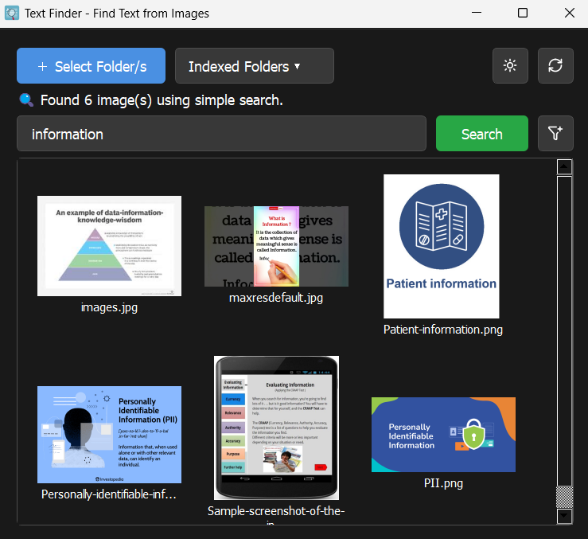

Find Any Text, In Any Image. Instantly.
Stop manually searching through screenshots and photos. Text Finder uses powerful OCR technology to scan your image folders and build a searchable database, letting you find what you need in seconds.
Free to use, v1.0

Everything You Need to Search Smarter
Text Finder is packed with features to make finding information effortless.
Powerful OCR Engine
Powered by Tesseract, it accurately extracts text from your images, making even blurry words searchable.
Instant Search Results
Once your folders are indexed, searching is lightning-fast. Get results in a flash!
Advanced Filtering
Narrow your search with filters for exact word matches, file types, and file sizes to pinpoint what you need.
Light & Dark Modes
Enjoy a comfortable viewing experience at any time of day with a simple theme toggle.